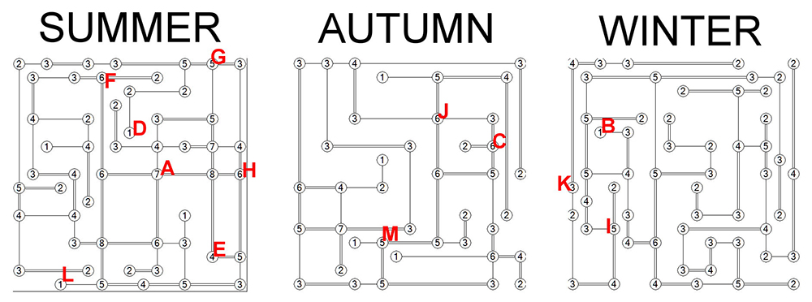

The puzzle is a standard Hashiwokakero (Hashi) puzzle but partially in triplet format. Each individual Hashi can be about half-solved on its own, without the need for the 13 blank items. After each puzzle is solved as far as it can go on its own, solvers can use logic to determine where to place the various triplets, and complete the rest of the puzzle. For example, an island on the edge (or that has no islands in one of its directions) can have at most a 6, and an island that has another island in only one direction can have a number of at most 2. Using these types of deductions, and working back and forth between the puzzles, solvers will solve the three puzzles to these configurations:

Per the flavortext, we are interested in how many spells (bridges) each named island requires over the course of a year. (Some islands only have bridges in one or two seasons.) The named islands start with a different letter from A-M, and summing the bridges for those islands over the course of a year gives: A=16, B=1, C=18, D=1, E=12, F=12, G=5, H=12, I=12, J=9, K=14, L=5, M=19 Converting numbers to letters (1 is A, 2 is B, etc.) in this order gives the thematic answer, PARALLEL LINES.